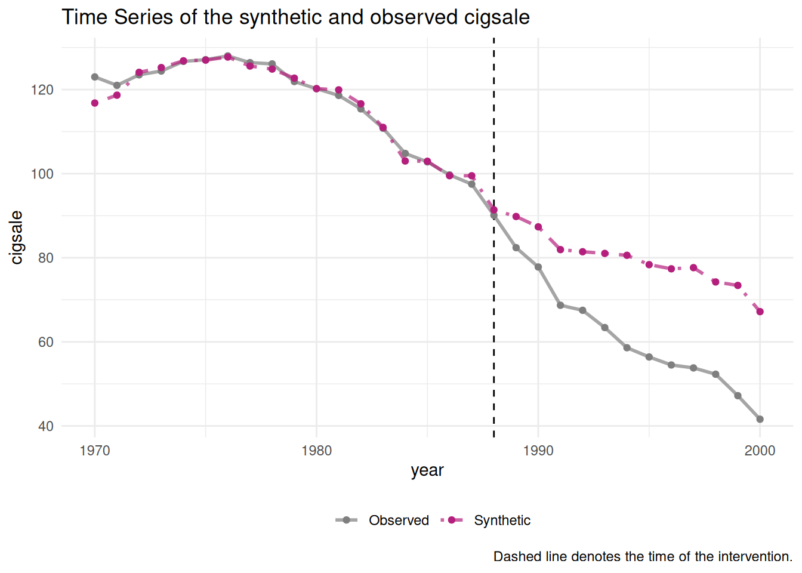
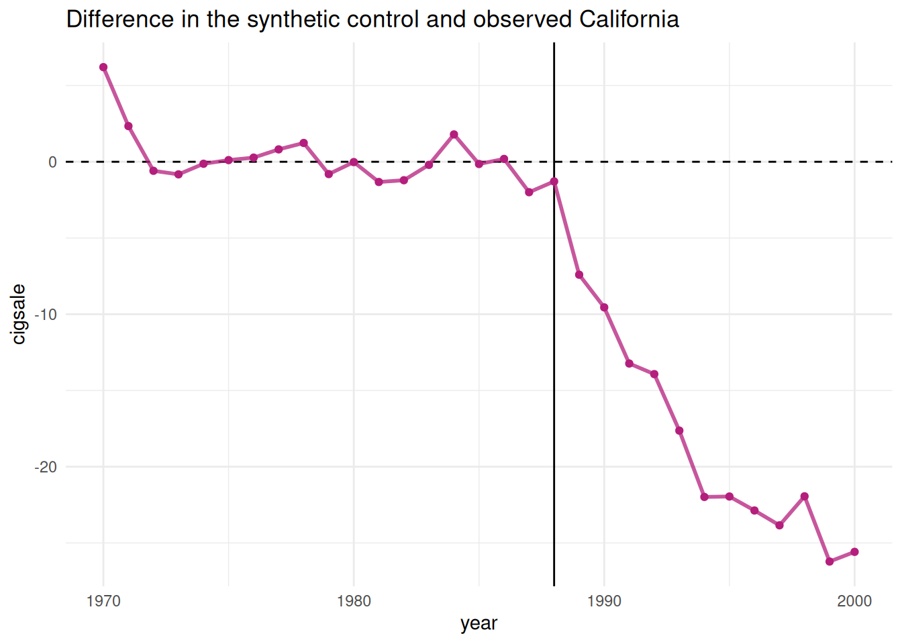
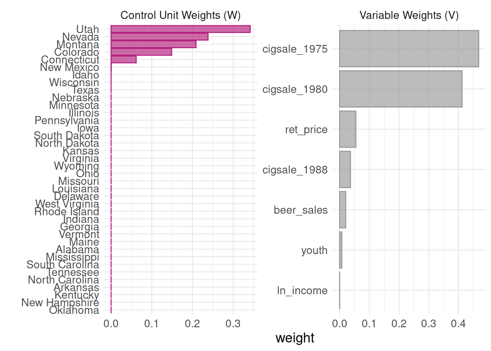
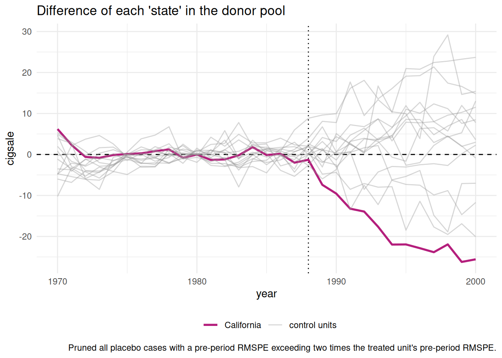
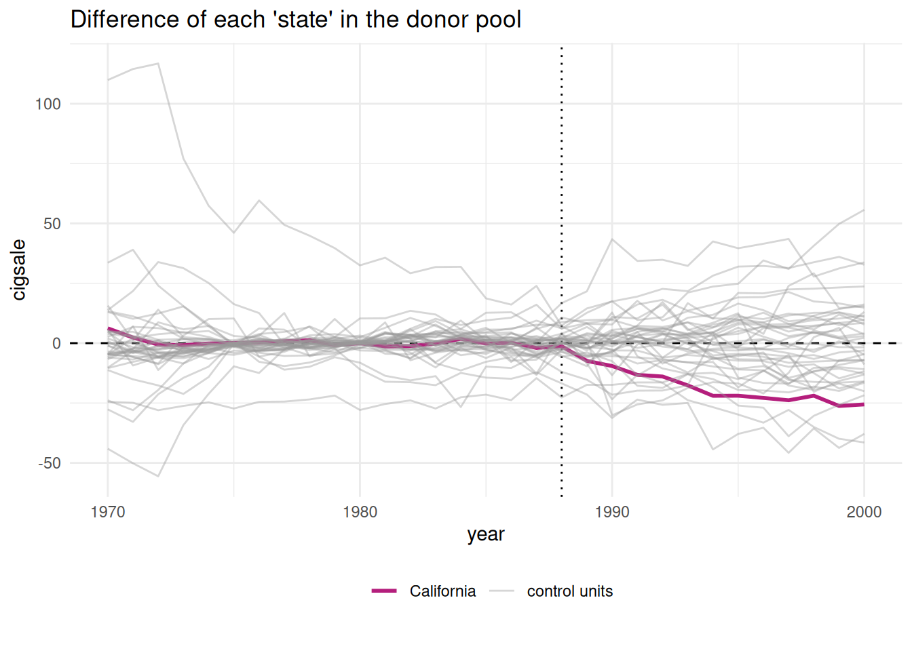
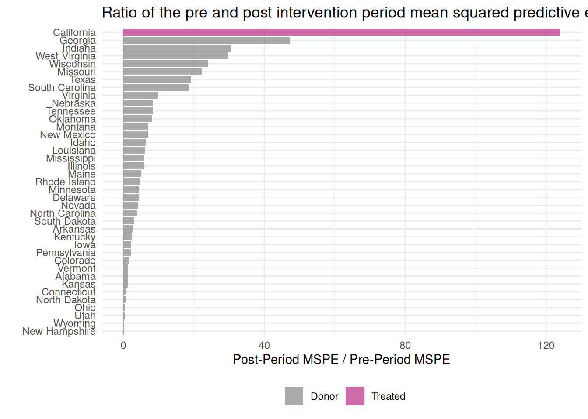
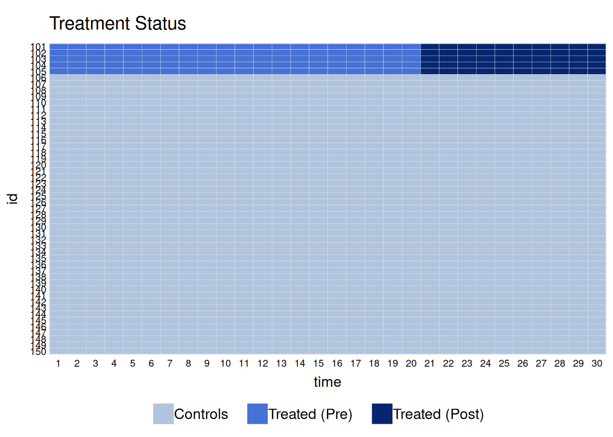
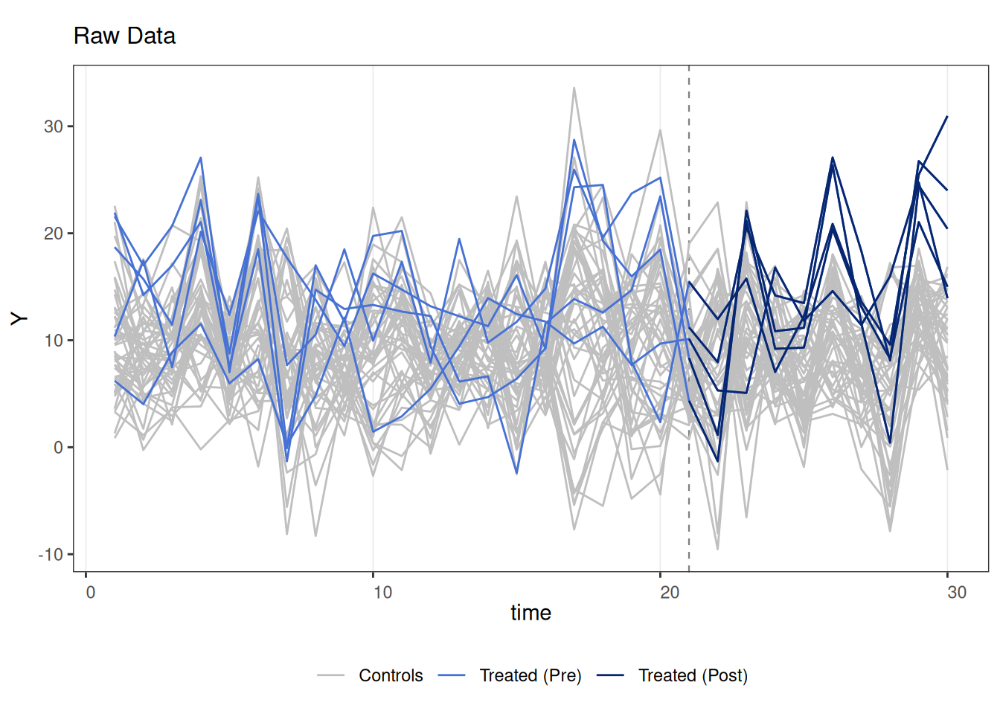
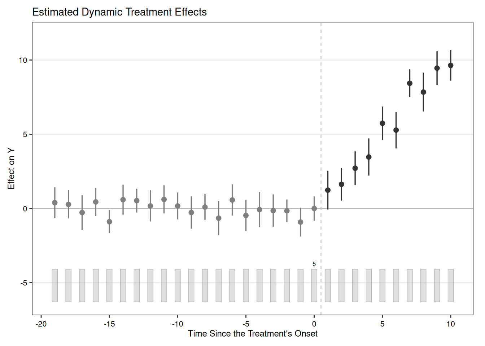

Rows: 1,209
Columns: 7
$ state <chr> "Rhode Island", "Tennessee", "Indiana", "Nevada", "Louisiana…
$ year <dbl> 1970, 1970, 1970, 1970, 1970, 1970, 1970, 1970, 1970, 1970, …
$ cigsale <dbl> 123.9, 99.8, 134.6, 189.5, 115.9, 108.4, 265.7, 93.8, 100.3,…
$ lnincome <dbl> NA, NA, NA, NA, NA, NA, NA, NA, NA, NA, NA, NA, NA, NA, NA, …
$ beer <dbl> NA, NA, NA, NA, NA, NA, NA, NA, NA, NA, NA, NA, NA, NA, NA, …
$ age15to24 <dbl> 0.1831579, 0.1780438, 0.1765159, 0.1615542, 0.1851852, 0.175…
$ retprice <dbl> 39.3, 39.9, 30.6, 38.9, 34.3, 38.4, 31.4, 37.3, 36.7, 28.8, …18 Synthetic Control in R and Stata
18.1 Synthetic control
Abadie et al. have a few papers on synthetic control (https://economics.mit.edu/files/11859, https://economics.mit.edu/files/17847). The key idea is for a case study situation. A single unit, say a state/firm/country is exposed to a shock, and we are interested in the effect of that shock. For example, Card et al studied the effect of minimum wage increase for the state of New Jersey. They used diff-in-diff, with Pennsylvania as the control state. The point of synthetic control is that maybe parallel trend assumption does not hold for the control unit. Is Pennsylvania a good control for New Jersey? Does it follow the same trend as New Jersey? Maybe not. Synthetic control is to generate a more comparable control with some combination of multiple control units, which can have a much closer parallel trend as the treated unit, than using any of the control units.
Now, how to construct this synthetic control unit? Basically it is a weighted average of multiple control units. There are two sets of weights to be determined. One set for the control units, one set to determine the importance of predictors. Abadie et al (2010) propose to choose a set of \(w_i\)’s so that the resulting synthetic control best resembles the pre-intervention values for the treated unit of predictors of the outcome variable, subject to the constraints that the weights are non-negative and sum to 1. Another set of weights \(v_h\) for predictor importance is determined such that it minimizes the mean squared prediction error (MSPE) of this synthetic control with respect to the outcome in the pre-treatment period. The intuition of these weights are to pick \(w_i\)’s to make the weighted sum of each predictor as close to the treated unit’s value of predictor as close as possible, given a set of \(v_h\)’s. Then \(v_h\)’s are determined by how important each predictor is to predict the outcome. We don’t use any information post-treatment to determine the weights. But we can use pre-treatment outcome to see the relative importance of each predictor in terms of predictor outcome. We can do this by out-of-sample validation. Basically divide the pre-treatment period into training and validation periods (that’s one reason that the pre-treatment period cannot be too short). Iterate the process of choosing \(w_i\) and \(v_h\) to achieve a minimization of MSPE in the validation period.
18.2 inference
Since sythetic control is for case study situation, we have essentially one treated unit and one synthetic control. The usual inference method would not work. Abadie et al suggested a permutation based approach. The basic idea is to permute the label of treatment; in other words, suppose one control unit is now a treated unit. Then follow the same procedure to get the synthetic control for that “treated unit”; look at the effect. Now if the treatment is truely for the treated unit only, then there would not be any effect for all the control unit. Therefore we can have a distribution of treatment effects after permutation of treatment label.
18.3 an example
The canonical sythetic control is implemented in both R and Stata (https://web.stanford.edu/~jhain/synthpage.html). We use a package called “tidysynth” here to study one of the original examples, which evaluates the impact of Proposition 99 on cigarette consumption in California.



# A tibble: 7 × 4
variable California synthetic_California donor_sample
<chr> <dbl> <dbl> <dbl>
1 ln_income 10.1 9.85 9.83
2 ret_price 89.4 89.4 87.3
3 youth 0.174 0.174 0.173
4 beer_sales 24.3 24.2 23.7
5 cigsale_1975 127. 127. 137.
6 cigsale_1980 120. 120. 138.
7 cigsale_1988 90.1 91.4 114. 


# A tibble: 39 × 8
unit_name type pre_mspe post_mspe mspe_ratio rank fishers_exact_pvalue
<chr> <chr> <dbl> <dbl> <dbl> <int> <dbl>
1 California Trea… 3.17 392. 124. 1 0.0256
2 Georgia Donor 3.79 179. 47.2 2 0.0513
3 Indiana Donor 25.2 770. 30.6 3 0.0769
4 West Virginia Donor 9.52 284. 29.8 4 0.103
5 Wisconsin Donor 11.1 268. 24.1 5 0.128
6 Missouri Donor 3.03 67.8 22.4 6 0.154
7 Texas Donor 14.4 277. 19.3 7 0.179
8 South Carolina Donor 12.6 234. 18.6 8 0.205
9 Virginia Donor 9.81 96.4 9.83 9 0.231
10 Nebraska Donor 6.30 52.9 8.40 10 0.256
# ℹ 29 more rows
# ℹ 1 more variable: z_score <dbl># A tibble: 31 × 3
time_unit real_y synth_y
<dbl> <dbl> <dbl>
1 1970 123 117.
2 1971 121 119.
3 1972 124. 124.
4 1973 124. 125.
5 1974 127. 127.
6 1975 127. 127.
7 1976 128 128.
8 1977 126. 126.
9 1978 126. 125.
10 1979 122. 123.
# ℹ 21 more rows# A tibble: 1,209 × 5
.id .placebo time_unit real_y synth_y
<chr> <dbl> <dbl> <dbl> <dbl>
1 California 0 1970 123 117.
2 California 0 1971 121 119.
3 California 0 1972 124. 124.
4 California 0 1973 124. 125.
5 California 0 1974 127. 127.
6 California 0 1975 127. 127.
7 California 0 1976 128 128.
8 California 0 1977 126. 126.
9 California 0 1978 126. 125.
10 California 0 1979 122. 123.
# ℹ 1,199 more rows# A tibble: 1,482 × 50
.id .placebo .type time_unit California Alabama Arkansas Colorado
<chr> <dbl> <chr> <dbl> <dbl> <dbl> <dbl> <dbl>
1 California 0 treated 1970 123 NA NA NA
2 California 0 treated 1971 121 NA NA NA
3 California 0 treated 1972 124. NA NA NA
4 California 0 treated 1973 124. NA NA NA
5 California 0 treated 1974 127. NA NA NA
6 California 0 treated 1975 127. NA NA NA
7 California 0 treated 1976 128 NA NA NA
8 California 0 treated 1977 126. NA NA NA
9 California 0 treated 1978 126. NA NA NA
10 California 0 treated 1979 122. NA NA NA
# ℹ 1,472 more rows
# ℹ 42 more variables: Connecticut <dbl>, Delaware <dbl>, Georgia <dbl>,
# Idaho <dbl>, Illinois <dbl>, Indiana <dbl>, Iowa <dbl>, Kansas <dbl>,
# Kentucky <dbl>, Louisiana <dbl>, Maine <dbl>, Minnesota <dbl>,
# Mississippi <dbl>, Missouri <dbl>, Montana <dbl>, Nebraska <dbl>,
# Nevada <dbl>, `New Hampshire` <dbl>, `New Mexico` <dbl>,
# `North Carolina` <dbl>, `North Dakota` <dbl>, Ohio <dbl>, Oklahoma <dbl>, …18.4 Generalized Synthetic Control
The idea of generalized SC is to combine both an interactive fixed effect model and synthetic control. It is basically a panel data synthetic control. It naturally takes multiple treated units and uses bootstrap to get standard errors. It generates ATT with standard errors.
Examples are here: https://yiqingxu.org/packages/gsynth/gsynth_examples.html


user system elapsed
1.239 0.002 1.252 Call:
gsynth(formula = Y ~ D + X1 + X2, data = simdata, index = c("id",
"time"), force = "two-way", r = c(0, 5), CV = TRUE, se = TRUE,
nboots = 100, inference = "parametric", parallel = FALSE,
vartype = "parametric")
Average Treatment Effect on the Treated:
ATT.avg S.E. CI.lower CI.upper p.value
[1,] 5.544 0.2332 5.086 6.001 0
~ by Period (including Pre-treatment Periods):
ATT S.E. CI.lower CI.upper p.value count
-19 0.392160 0.5269 -0.6405 1.42477 4.567e-01 5
-18 0.276548 0.4643 -0.6335 1.18658 5.514e-01 5
-17 -0.275393 0.6087 -1.4684 0.91763 6.510e-01 5
-16 0.441201 0.3854 -0.3141 1.19648 2.522e-01 5
-15 -0.889595 0.4480 -1.7677 -0.01148 4.708e-02 5
-14 0.593891 0.5606 -0.5049 1.69266 2.894e-01 5
-13 0.528749 0.3906 -0.2368 1.29430 1.758e-01 5
-12 0.171569 0.5287 -0.8646 1.20773 7.455e-01 5
-11 0.610832 0.4811 -0.3321 1.55375 2.042e-01 5
-10 0.170597 0.4985 -0.8064 1.14760 7.322e-01 5
-9 -0.271892 0.6212 -1.4894 0.94566 6.616e-01 5
-8 0.094843 0.4907 -0.8668 1.05652 8.467e-01 5
-7 -0.651976 0.5482 -1.7264 0.42246 2.343e-01 5
-6 0.573686 0.4695 -0.3465 1.49389 2.217e-01 5
-5 -0.469686 0.5459 -1.5397 0.60035 3.896e-01 5
-4 -0.077766 0.5735 -1.2019 1.04633 8.921e-01 5
-3 -0.141785 0.5877 -1.2937 1.01015 8.094e-01 5
-2 -0.157100 0.3585 -0.8597 0.54548 6.612e-01 5
-1 -0.915575 0.4511 -1.7997 -0.03147 4.238e-02 5
0 -0.003309 0.3824 -0.7529 0.74625 9.931e-01 5
1 1.235962 0.7344 -0.2034 2.67533 9.238e-02 5
2 1.630264 0.6420 0.3720 2.88857 1.111e-02 5
3 2.712178 0.5167 1.6995 3.72489 1.529e-07 5
4 3.466758 0.6174 2.2567 4.67678 1.961e-08 5
5 5.740132 0.4671 4.8245 6.65573 0.000e+00 5
6 5.280035 0.5699 4.1630 6.39703 0.000e+00 5
7 8.436485 0.4953 7.4658 9.40719 0.000e+00 5
8 7.839902 0.6416 6.5823 9.09749 0.000e+00 5
9 9.455115 0.5156 8.4445 10.46572 0.000e+00 5
10 9.638509 0.4860 8.6860 10.59104 0.000e+00 5
Coefficients for the Covariates:
Coef S.E. CI.lower CI.upper p.value
X1 1.022 0.02862 0.9658 1.078 0
X2 3.053 0.02971 2.9948 3.111 0 ATT S.E. CI.lower CI.upper p.value count
-19 0.392159788 0.5268522 -0.6404515 1.42477105 4.566678e-01 5
-18 0.276547958 0.4643102 -0.6334832 1.18657913 5.514355e-01 5
-17 -0.275392926 0.6086987 -1.4684204 0.91763454 6.509600e-01 5
-16 0.441201288 0.3853540 -0.3140786 1.19648120 2.522403e-01 5
-15 -0.889595124 0.4480282 -1.7677142 -0.01147608 4.708013e-02 5
-14 0.593890957 0.5606053 -0.5048753 1.69265722 2.894293e-01 5
-13 0.528749012 0.3905935 -0.2368003 1.29429829 1.758300e-01 5
-12 0.171568737 0.5286610 -0.8645878 1.20772528 7.455334e-01 5
-11 0.610832288 0.4810873 -0.3320814 1.55374600 2.041946e-01 5
-10 0.170597468 0.4984810 -0.8064074 1.14760230 7.321743e-01 5
-9 -0.271891657 0.6212102 -1.4894413 0.94565804 6.616178e-01 5
-8 0.094842558 0.4906626 -0.8668385 1.05652363 8.467281e-01 5
-7 -0.651975701 0.5481897 -1.7264078 0.42245640 2.343118e-01 5
-6 0.573686472 0.4695018 -0.3465201 1.49389305 2.217436e-01 5
-5 -0.469685905 0.5459471 -1.5397225 0.60035067 3.896160e-01 5
-4 -0.077766449 0.5735274 -1.2018594 1.04632654 8.921428e-01 5
-3 -0.141784521 0.5877340 -1.2937220 1.01015300 8.093697e-01 5
-2 -0.157100323 0.3584634 -0.8596757 0.54547503 6.611975e-01 5
-1 -0.915575087 0.4510820 -1.7996796 -0.03147056 4.238391e-02 5
0 -0.003308833 0.3824346 -0.7528668 0.74624914 9.930968e-01 5
1 1.235962010 0.7343830 -0.2034023 2.67532634 9.237632e-02 5
2 1.630264312 0.6420023 0.3719629 2.88856569 1.110607e-02 5
3 2.712177702 0.5167014 1.6994615 3.72489390 1.529080e-07 5
4 3.466757691 0.6173698 2.2567352 4.67678023 1.961459e-08 5
5 5.740132310 0.4671494 4.8245364 6.65572824 0.000000e+00 5
6 5.280034526 0.5699056 4.1630401 6.39702892 0.000000e+00 5
7 8.436484821 0.4952682 7.4657769 9.40719271 0.000000e+00 5
8 7.839901526 0.6416398 6.5823107 9.09749235 0.000000e+00 5
9 9.455114684 0.5156239 8.4445104 10.46571899 0.000000e+00 5
10 9.638509457 0.4859953 8.6859762 10.59104270 0.000000e+00 5 ATT.avg S.E. CI.lower CI.upper p.value
[1,] 5.543534 0.2332188 5.086434 6.000634 0 Coef S.E. CI.lower CI.upper p.value
X1 1.021890 0.02861523 0.9658054 1.077975 0
X2 3.052994 0.02971449 2.9947551 3.111234 0 user system elapsed
5.755 0.291 23.028 